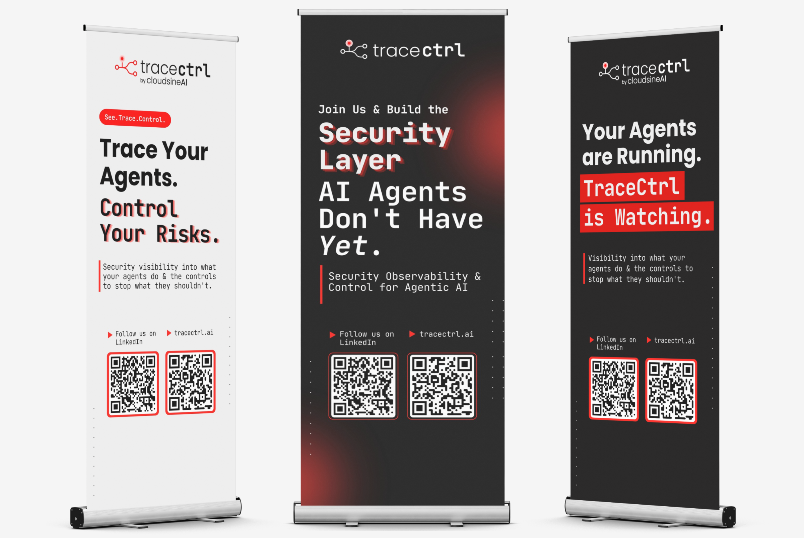
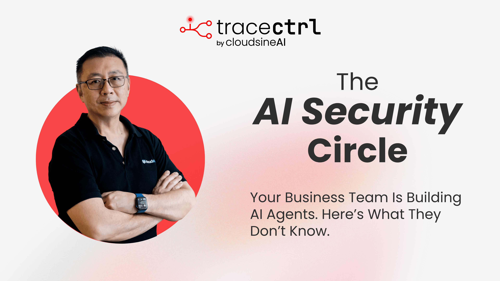
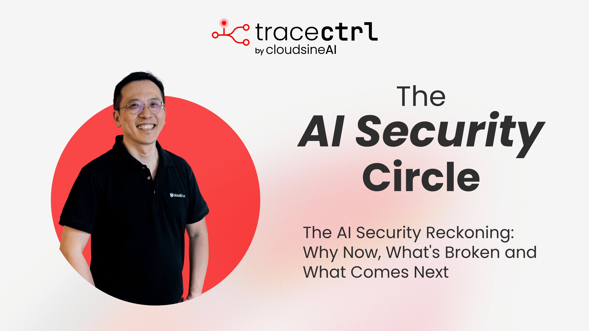
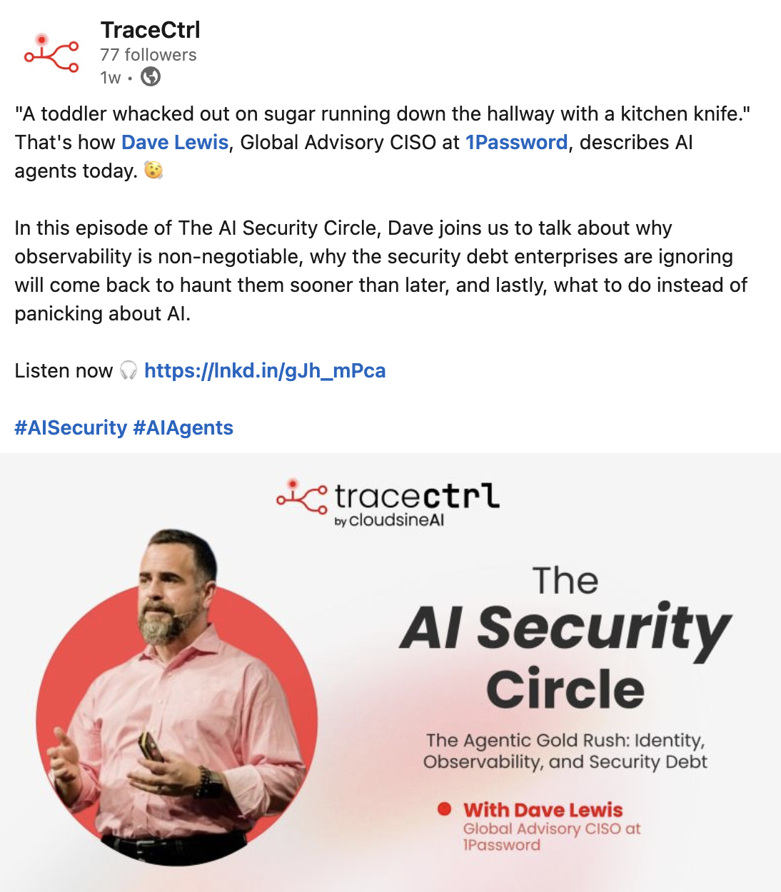
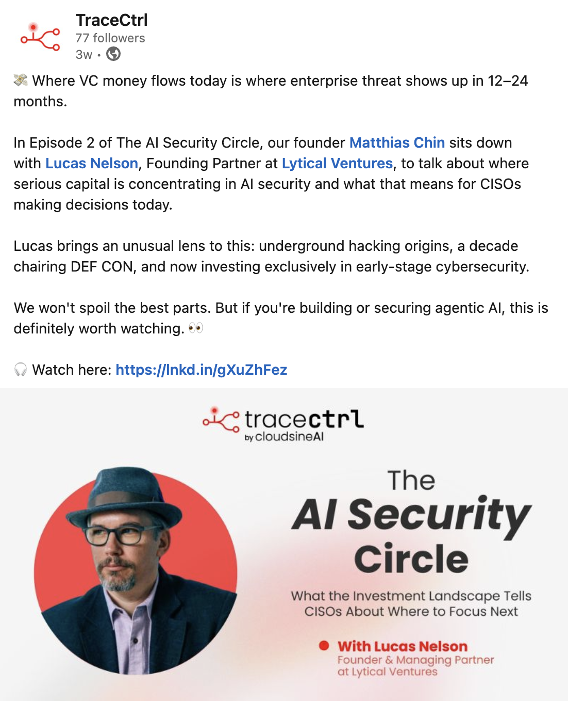
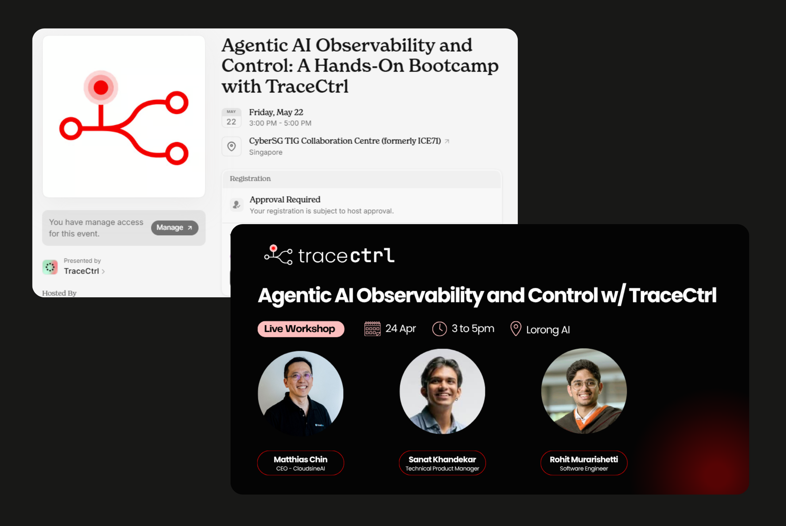
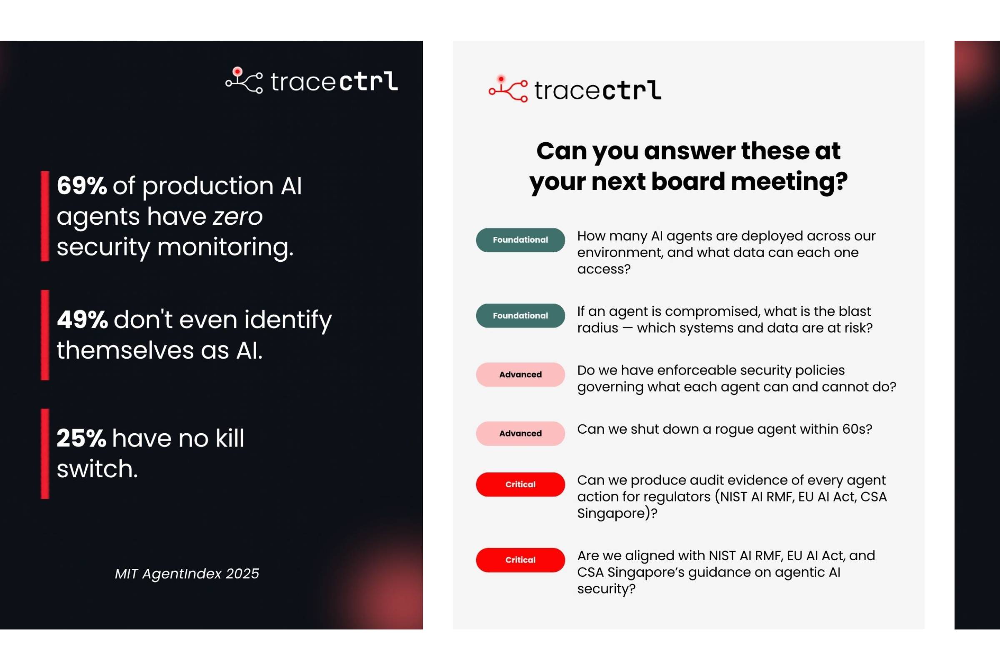

TraceCtrl was a bet on where AI security is heading. CloudsineAI's GenAI firewall protects GenAI applications — but the frontier was already moving toward agentic AI, where the question isn't what a model says, but what an autonomous agent actually does.
Cloudsine's GenAI firewall secures GenAI applications — the chatbots and copilots built on large language models. But the industry was already shifting. Agentic AI — systems that don't just answer, but take actions and chain decisions on their own — opens up a different class of risk. You can't simply filter a prompt; you need to trace and observe what an agent is actually doing, step by step.
TraceCtrl was the natural progression of the firewall: extend Cloudsine's protection from GenAI apps to agentic AI.
The catch — it was new, unproven, and aimed at an audience Cloudsine hadn't sold to directly before: AI developers. Going straight to a full product launch would have been premature. So we reframed it. Not a launch — a 3-month experiment, designed to put TraceCtrl in front of real developers and surface honest signal before investing further.

No paid budget. Three-month window to find out whether there was something here. The strategy was simple: lead with credibility and community, not advertising. Four moves to give an unproven product a real presence:







The experiment did its job. With no marketing budget, the workshops drew 30+ AI developers and surfaced 8 potential leads — and, just as importantly for an experiment, real and direct feedback from the exact audience TraceCtrl was built for.
30+ AI developers. 8 potential leads. Zero paid budget.